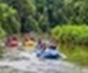

About Us - Exciting Experiences

Whitewater rafting is the activity of traveling downstream on a river in an inflatable raft, moving through both fast rapids and calm sections while keeping the raft under control. It is typically done by a group of paddlers or guided by someone rowing with oars. Although some trips require a higher level of fitness, river rafting experiences are available for people of many ages, commonly from about 5 to over 80 years old.